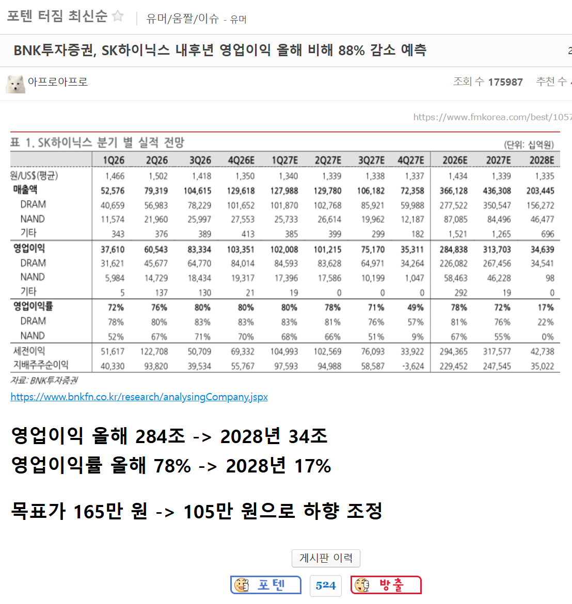
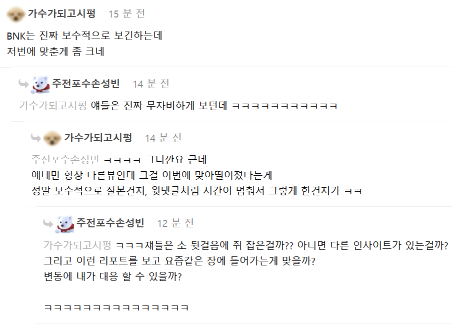
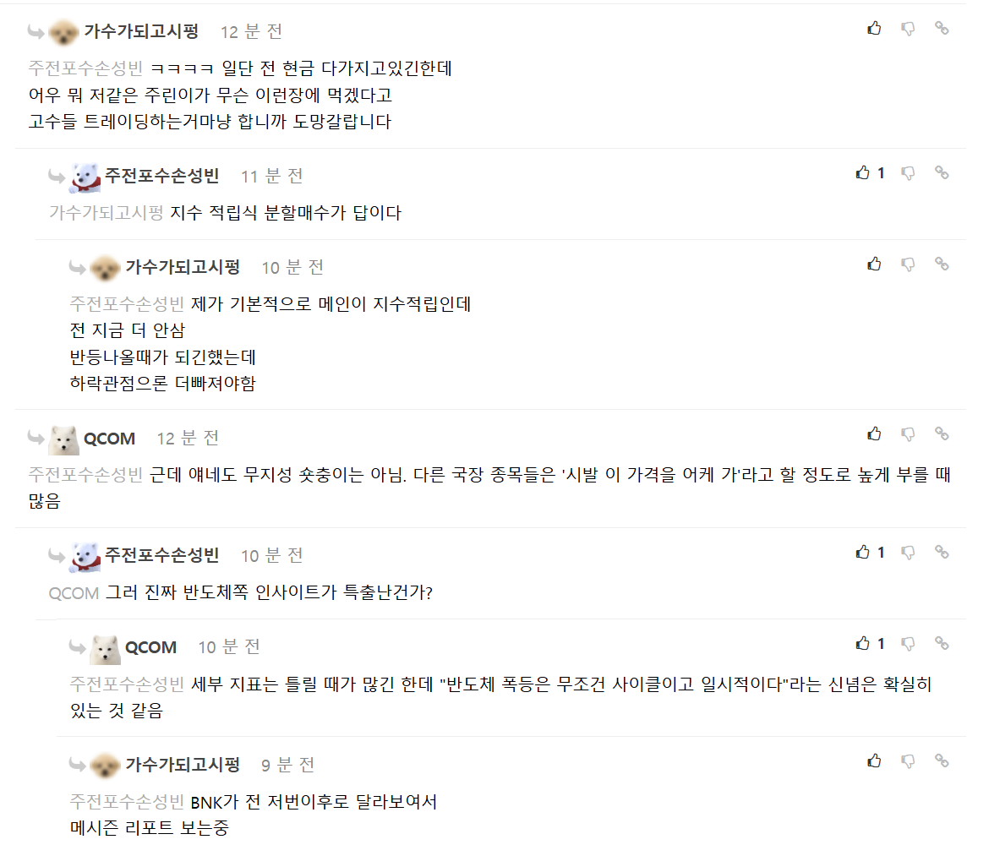
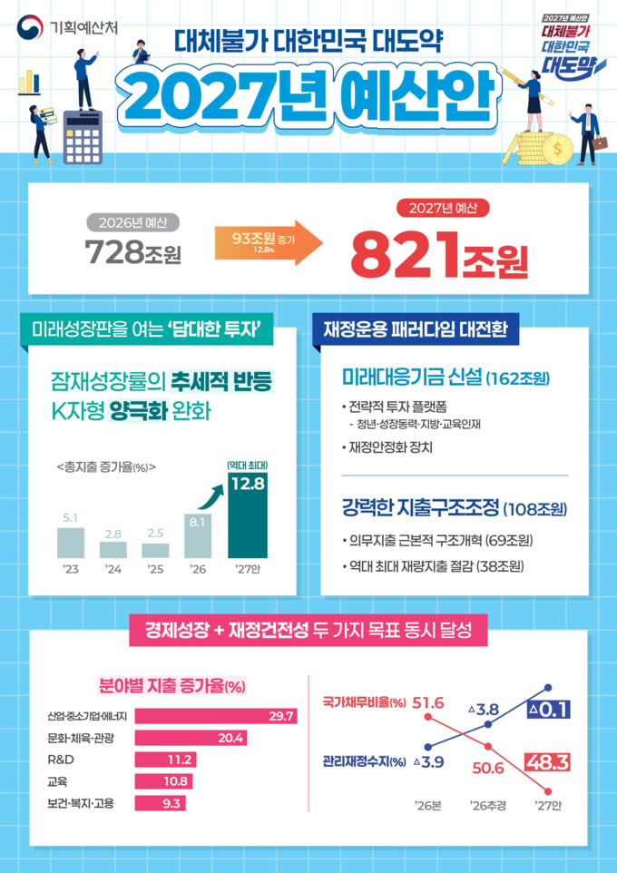
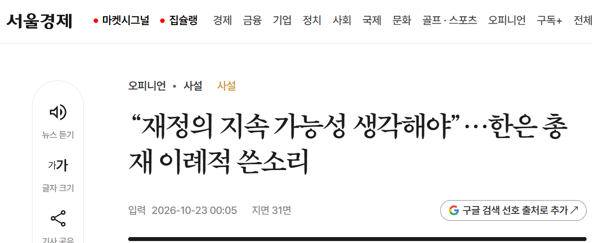

https://www.bnkfn.co.kr/uploads/85504/1/221172_509.pdf
링크는 여기로
BNK의 전망이 만약 진짜라면


https://www.sedaily.com/article/20105039
어떻게 될지 좀 무서움



https://www.bnkfn.co.kr/uploads/85504/1/221172_509.pdf
링크는 여기로
BNK의 전망이 만약 진짜라면


https://www.sedaily.com/article/20105039
어떻게 될지 좀 무서움
논리전개가 맞아도 어차피 믿을건 아니잖아? 소신대로 하셈
그동안 논리전개가 맞았으면 당연히 믿었겠지ㅋㅋ
논리전개는 잘하는데 주가전망 틀리는 사람
논리전개는 못하는데 주가전망 맞는 사람
이렇게 보면 투자 관점에선 전자가 낫긴 하지 주가전망은 결국 투자자 본인이 하는거라
리포트는 논리 전개 보려고 찾는거라 아무튼 결과는 맞췄잖아 하면
얼탱이가 없긴하지 ㅋㅋㅋㅋ
저 리포트에서 추천했던게 2차전지랑 전력주더라
저 리포트 말 듣고 2차전지나 전력주 샀으면 삼닉 사는 것보다 더 털렸음
끼약 이건 bmk의견도 들어봐야 한다
https://youtu.be/OnO92YGNwD8?si=t5UI5ZC5SMSSGznt
퍼오고 보니까 채널명이 ㅋㅋㅋㅋ
봄에 상승장이구나
다시 돌아올까~~~
34조가 좆은 아닌데 올해 넘 많이 벌어서
일단은 34조도 적은돈은 아니긴 함 근데 이렇게 급격하게 떨어질까에는 의문이긴 함
이거 염두해둬서 장기계약 계속 발표하는 중인데
내후년 이익 전망은 메모리 공급 증설 가정부터 따져봐야지
개인적으로는 민주당이 데이터센터 옥죄서 반도체 기업들이 더 오래 갈 거라고봄. 빅테크들이 어차피 투자는 할거고 외적요인때문에 투자가 늦어지는데 반도체 수요에 대한 시차가 늦어지고 길어지는거지. 28년 메모리 수요절벽이 데이터센터 착공 지연으로 29년 30년까지 수요가 유지되고 빅테크들도 자금적으로 여유도 생긴다고봄
거 "미국"민주당이라고좀 쓰쇼
근데 시간이 지날수록 칩 효율은 늘어나고 공장도 늘어나니 기대수익이 지금같지는 않을듯
칩 효율이 좋아지면 더 많이쓸거라고 나는 생각하는데
앞으로 쓸곳은 무궁무진해서
데이터 센터에 들어가는 자금이 줄어들면 반도체 가격이 지금처럼 안 나오니까 영익도 줄지...
아직도 착공 안한게 더 많아서...
반도체 업체들은 증설을 안했고...
단 것을 먹은 직후는 하늘을 날 것마냥 행복하지
bnk가 슬슬 매수하는구나
그럼 영익 적당히 50% 감소하는걸로 합의 봅시다 ㅇㅋ?
이미 계약한게 있는데 영익이 저렇게 떨어진다구?
지금 재무제표에 잡히는 장기계약=고정된 미래의 매출이라는 인식과 다르게 아무리 장기계약이라도 메모리 가격이 완전 다운되거나 필요가 없다고 생각하면 위약금을 물고서라도 계약취소 가능함. 아니면 물량을 줄이거나 수정 계약
28년도부터 새컴 사면 되는거임?
내년말 일부는 디램 생산으로 공장 셋팅 바꿔야한다고 생각함
이번에 소매 수요들이 학습해서 PC들 램128Gb 꼽을수도 있음
2년 뒤면 기업들 로컬 LLM 수요도 터지겠지
ㅋㅋㅋ 일본 1년 예산이 1100조인데
인구 반도 안되는 나라가 800조를 쓰시겠다?
업황을 보면 수익이 줄어든다는 말은 못 할 것 같은데
최소 서버용 ddr5메모리의 가격이 떨어지는 꼴이 나와야
메모리 반도체 업황을 조진다는 예상이 나올 텐데
가장 기초적인 제품인 ddr5 rdimm의 가격이
아직도 미친듯이 춤추고 있는 걸 보면...멀었다 싶어
ddr5 rdimm이 아직도 지랄인데
그 상위 제품인 hbm4 가격은 그냥 넘사벽이지
그 ddr5가격이 내려감
BNK 문제는 주가 전망은 맞춰도 업황을 맞추지는 못했다는거
레포트에서 중요한게 무당마냥 주가 전망 맞냐 틀리냐 만큼 중요한게 자신들만의 논리전개과정인데, 논리전개는 싹다 틀리고 주가 떨어진다는 것만 맞추는 회사의 2년뒤 업황 전망을 어떻게 믿어야 할지 모르겠음